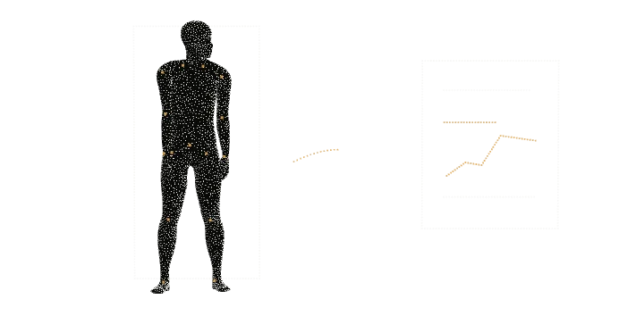
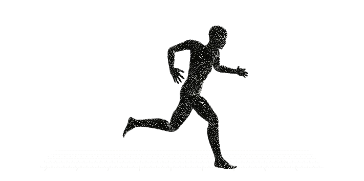
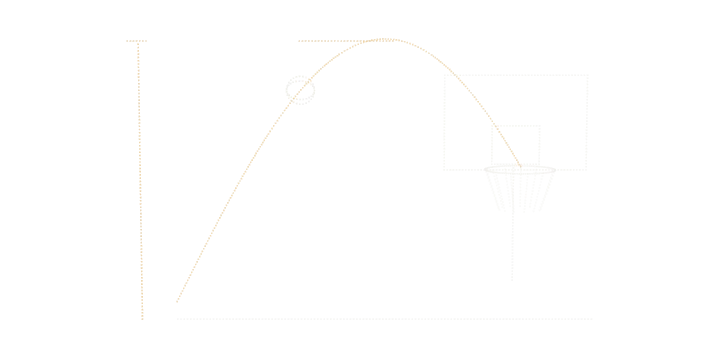
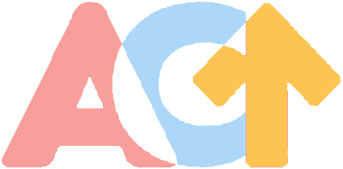
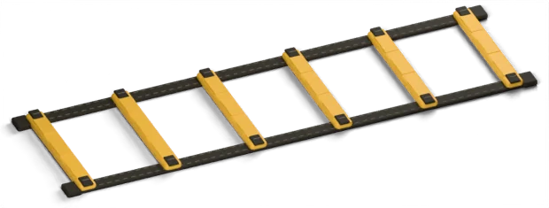
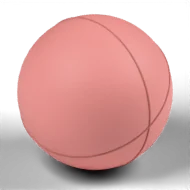
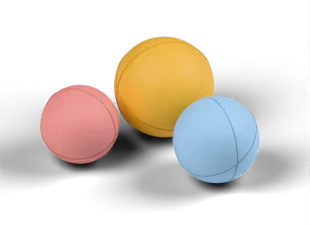
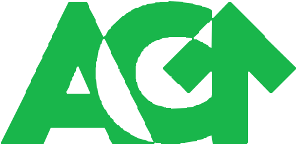

Доступно
Анализ осанки и движения
Оценка положения тела и объяснение измерений со специалистом.
ПодробнееАтлетикс Корп
Решения для себя, специалистов, студий и команд. Выберите направление и посмотрите, что доступно.
Доступно
Оценка положения тела и объяснение измерений со специалистом.
ПодробнееДоступно
Занятия очно, онлайн и с выездом. Доступно дистанционное сопровождение.
ПодробнееДоступно
Практика осанки и движения для групп, команд и сообществ.
ПодробнееДоступны действующие программы
Обучение тренеров биомеханике, работе с осанкой и анализу движения.
ПодробнееДоступно
Индивидуальная выездная оценка и сопровождение.
ПодробнееПилот по согласованию
Внедрение анализа в работу студии с её клиентами.
ПодробнееДоступно
Запускаем и управляем коворкингом на площадке партнёра.
ПодробнееФинальный этап разработки
Устройство для обратной связи о положении тела.
ПодробнееВ разработке
Технологии анализа и управления движением в спорте. Для начинающих, спортсменов и команд.
ПодробнееВ разработке
Инструменты анализа осанки и движения.
ПодробнееВ разработке
Образовательная программа для руководителей команд.
ПодробнееПроектирование
Открытый помощник по теме движения.
ПодробнееГипотеза
Помощь с планированием и адаптацией занятий.
ПодробнееГипотеза
Поддержка человека в формировании пищевых привычек.
ПодробнееГипотеза
Практики наблюдения за своим состоянием и движением.
ПодробнееГипотеза
Идея приложения для данкеров с анализом прыжка по видео и сообществом.
ПодробнееРазвитие приостановлено
Детские игровые занятия на равновесие, координацию и внимание.
ПодробнееРазвитие приостановлено
Проект совместных беговых занятий.
ПодробнееРазвитие приостановлено
Формат занятий и работы с осанкой рядом с домом.
ПодробнееДоступно
Оценка положения тела и объяснение измерений со специалистом.
Три формата: онлайн, очно и с выездом. Состав материалов и подготовку уточняет команда при записи.
Выбрать формат
Доступно
Специалист помогает подобрать программу физической активности с учётом ваших целей, возможностей и особенностей движения.
| Занятия | Очно | Онлайн |
|---|---|---|
| 1 | 7 500 ₽ | 6 000 ₽ |
| 4 | 28 000 ₽ | 22 000 ₽ |
| 8 | 52 000 ₽ | 40 000 ₽ |
Занятия с выездом. Доплата по Москве 1 500 ₽. За МКАД — 2 000 ₽ за каждые начатые 10 км от МКАД. Итоговую стоимость подтвердим при записи.
Дистанционное сопровождение. Условия и стоимость по запросу. Формат обсуждаем с учётом вашей задачи.

Доступно
Практика осанки и движения для групп, команд и сообществ.
Формат на 60 минут для групп от четырёх участников. Место и дату согласуем с организатором.
Обсудить мастер-класс
Доступны действующие программы
Обучение тренеров биомеханике, работе с осанкой и анализу движения.
Действующие программы: основы работы с осанкой, «Тренинг без боли», «Тестирование и анализ». Состав и даты новых программ, включая обучение двигательному поведению, уточняются.
Запросить программу и даты
Доступно
Индивидуальная выездная оценка и сопровождение.
Первый этап включает комплексную выездную оценку и консультацию. Длительность 1,5–2 часа, стоимость 30 000 ₽ с выездом. Дальнейшее сопровождение обсуждаем индивидуально.
Запросить консультацию
Пилот по согласованию
Внедрение анализа в работу студии с её клиентами.
На пилоте студия работает с клиентом, команда Атлетикс Корп помогает с отчётами. После обучения отчёты может готовить тренер студии. Текущие условия обсуждаем перед запуском.
Обсудить пилот по почте
Доступно
Создаём пространство, в котором специалисты разных профилей работают на одной площадке.
Партнёр предоставляет помещение и получает доход от проекта. Атлетикс Корп собирает команду специалистов, берёт на себя управление коворкингом и привлекает клиентов. Условия сотрудничества обсуждаем для каждой площадки.
Обсудить площадку
Финальный этап разработки
Устройство для обратной связи о положении тела.
Проект развивается в Лаборатории Атлетикс Корп. Условия использования, срок выпуска и доступность покупки пока не подтверждены.
В разработке
SportTech — направление технологий анализа и управления движением в спорте.
Разрабатываем способы оценивать особенности движения и использовать эти данные для выбора нагрузки, работы над техникой и построения программ общей физической подготовки.

Оценить исходную подготовку, подобрать направления по интересам и возможностям и понять, с какой нагрузки начать.
Если ребёнок выбирает спорт, оценить его двигательные особенности и обсудить, какие дисциплины стоит попробовать. Если он уже тренируется, понять, какие навыки стоит развивать дальше.
Разобрать, что может сдерживать прогресс, и определить, что дальше проверить в технике и физической подготовке.
Для любителей и профессионалов. Анализировать движение в конкретной дисциплине, например в лёгкой атлетике, и строить программу общей физической подготовки под задачу спортсмена.
Оценивать движение игроков и разрабатывать программы общей физической подготовки с учётом требований конкретного вида спорта.
В разработке
Инструменты анализа осанки и движения.
Видеоанализ с учётом ощущений человека относится к этому направлению. Готовность этой функции предстоит подтвердить.

В разработке
Образовательная программа для руководителей команд.
Содержание, формат, даты и стоимость пока уточняются.

Проектирование
Открытый помощник по теме движения.
Это самостоятельный будущий сервис. Команда проверяет сценарии и границы ответов. Доступ к помощнику появится после проверки его готовности.

Гипотеза
Помощь с планированием и адаптацией занятий.
Изучаем задачи тренеров и проверяем, какие рекомендации были бы полезны. Возможность объединить с открытым ИИ-помощником обсуждается.

Гипотеза
Поддержка человека в формировании пищевых привычек.
Сценарии и спрос предстоит проверить.

Гипотеза
Практики наблюдения за своим состоянием и движением.
Команда уточняет, кому это может быть полезно и какой формат стоит проверить.

Гипотеза
Идея приложения для тех, кто осваивает слэм-данк, и для тех, кто уже регулярно прыгает.
Хотим дать данкерам возможность снимать прыжки на видео, оценивать высоту с помощью MediaPipe и ИИ и следить за прогрессом. В концепцию входят рейтинг участников, сообщество и организация событий.
Также рассматриваем тренировочные программы и материалы по восстановлению. Цель проекта — развивать сообщество данкеров и делать этот спорт доступнее.

Развитие приостановлено
Детские игровые занятия на равновесие, координацию и внимание.
Проект реализовывался ранее. Сейчас занятия недоступны. Рассматриваем возможность повторного запуска.




Развитие приостановлено
Проект совместных беговых занятий.
Проект реализовывался ранее. Сейчас занятия недоступны. Рассматриваем возможность повторного запуска.

Развитие приостановлено
Формат занятий и работы с осанкой рядом с домом.
Проект реализовывался ранее. Сейчас услуга недоступна. Рассматриваем возможность повторного запуска.
Инфраструктура компании
Здесь проводим тестирования, анализируем движение и разрабатываем инструменты, в том числе СТАТЬ.
Подробнее о Лаборатории